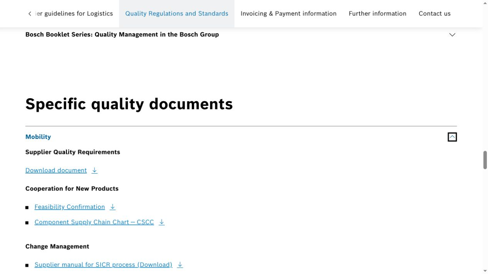
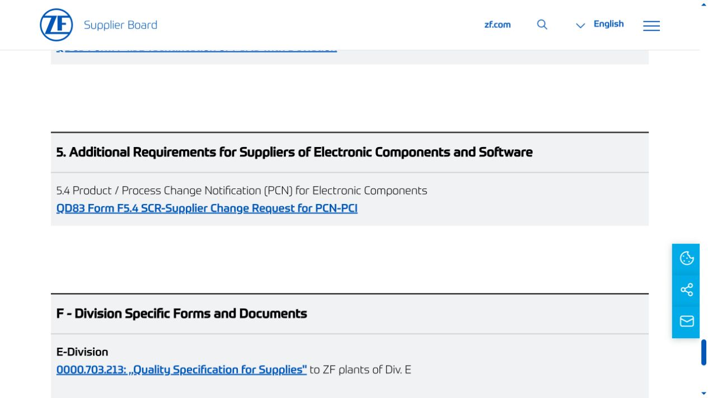

Why approved samples still fail: supplier change control for e-bike traders
Public supplier-quality materials from Bosch, ZF and PPG are translated into a practical change-notification workflow for e-bike projects, covering batteries, controllers, firmware, materials, factories and sub-tier suppliers.
Sample approval creates a baseline, not a permanent guarantee
Even after an e-bike sample passes testing, production risk can arise from unreviewed changes: a new cell or BMS, controller tuning, firmware updates, a different brake or fork factory, changes to frame material or welding, a line transfer, or a sub-tier supplier replacement. A part may look equivalent in isolation yet alter range, braking, thermal behaviour, EMC, durability, labelling or the validity of earlier test evidence when integrated into the bicycle.
A purchasing specification is therefore a static baseline, not a complete control system. Suppliers should describe changes before implementation; the buyer should use risk to decide whether document review, samples, partial validation or retesting is needed; and the first changed production lot should remain identifiable.
Public supplier documents show that mature buyers manage change separately
Bosch's public supplier page separates Mobility supplier quality requirements, new-product feasibility, the component supply-chain chart and change management, and provides a supplier manual for its SICR process plus a Change Proposal Form. The lesson is not to copy one company's forms, but to treat new-product approval, supply-chain visibility and serial-production changes as connected yet distinct controls.
E-bike traders can request the maker, part number and revision of critical components during quotation, freeze that baseline at sample approval, and use a change request for later reassessment. Without that sequence, the purchasing team may know the bicycle assembler while remaining blind to changes in the battery pack, controller or braking system below tier one.

Define reportable changes before debating notice periods
A workable trigger list should cover design and specification, raw materials, critical-component maker or part number, firmware and control parameters, process and inspection methods, tooling and equipment, manufacturing location, sub-tier suppliers, packaging and labels, and regulatory or certification status. For cells, BMS units, controllers, displays and sensors, it should also cover end-of-life substitutions, software revisions and test-program changes.
ZF's public QD83 page lists a general Supplier Change Request for product or process and a separate PCN form for electronic components and software. That is a useful signal that electronics deserve more detailed fields and a tailored review path. The actual form and notice period must come from the parties' contract, applicable requirements and risk level; one company's supplier rule is not an industry-wide legal deadline.

Turn one change request into four approval gates
Gate one is completeness: capture the current and proposed part number, revision, factory, sub-tier supplier, reason, planned date, affected SKUs and inventory. Gate two is impact analysis across safety, function, reliability, regulation, certification, lead time, cost, service parts and stock. Gate three is a validation plan naming the drawings, BOM, risk analysis, samples, comparison tests, laboratory input and approvers required. Gate four controls cutover and traceability through the effective lot, serial-number range, first-lot identification, old-stock disposition and dealer-content updates.
PPG's public supplier quality manual illustrates the possible strength of this control within its stated scope: it requires written notice at least 90 days before a planned change and written consent before implementation, with examples including raw materials, process parameters, equipment, sites, third-party manufacturing, test methods, regulatory status and packaging. Traders can learn from the logic of advance notice plus written approval, but should negotiate a notice period suited to their own e-bike project rather than copying 90 days automatically.
For e-bike traders: build a minimum viable change process in one week
Start with one live model and create a critical-component baseline: bicycle model, BOM revision, frame material and process, battery cells and BMS, controller hardware and firmware, motor, display, brakes, fork, charger, labels and instruction revision. Record the maker, part number, revision, production site and supporting evidence for each item.
Then create a one-page Supplier Change Request covering before-and-after details, reason, affected scope, risk, proposed validation, cutover date and first-lot traceability. State in the purchase order or quality agreement which changes need advance written notice and may not be implemented without approval. Emergency shortages can use a temporary deviation limited by quantity, lot and expiry date; verbal agreement should not become permanent approval by accident.
Finally track three monthly measures: unauthorised changes, on-time supplier notification and request-to-closure lead time. If the actual maker, revision or sub-tier source of a critical component cannot be confirmed, record it as a supply-chain visibility gap and close it before a complaint forces the investigation.